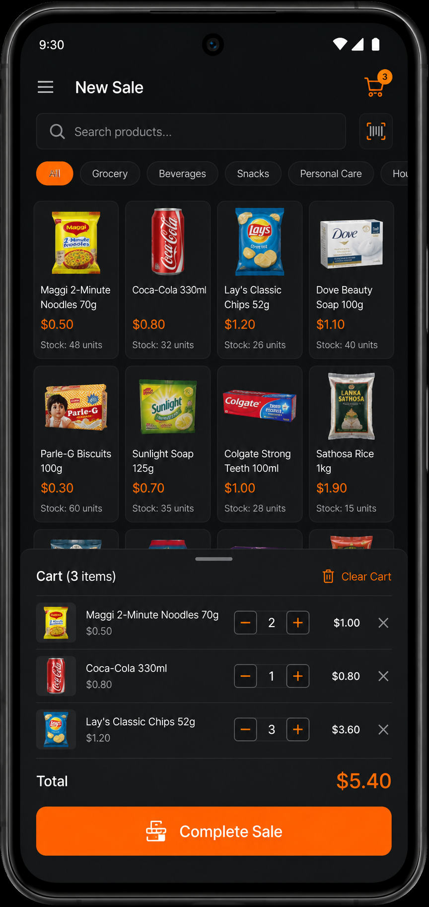
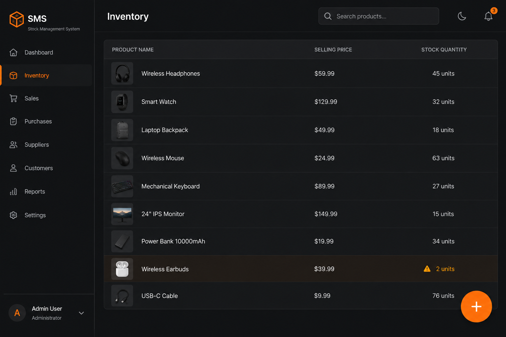
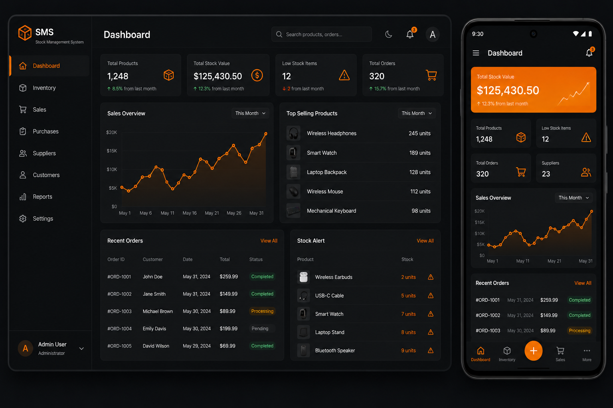
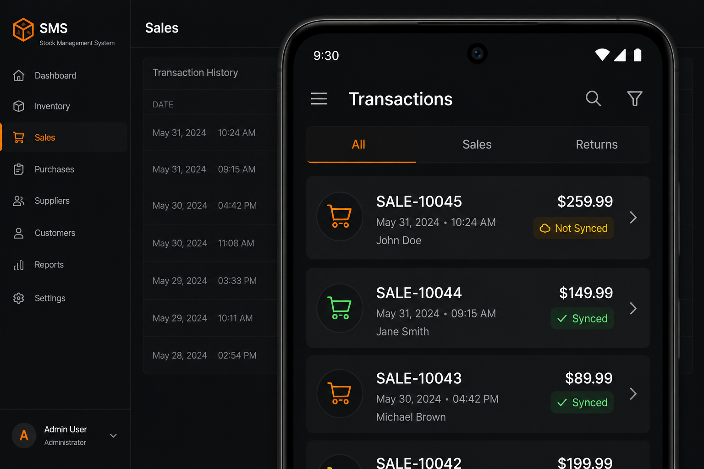

Paper records get lost, miscounted, or rewritten after the fact. There's no real way to know what actually happened on the shop floor today.
› Offline-first sales & inventory system
Run your store's books even when the internet doesn't show up.
RetailOS turns the PC you already own into your store's private server. No cloud account. No subscription server. The PC in your shop is the server — staff phones connect to it directly over your shop's own Wi-Fi, sales record instantly, and nothing about your books depends on a network signal you don't control.
Built for provision stores & supermarkets. Early access limited to the first 5 stores.
Try it — see what happens when the network disappears.
› The problem
Most stores are still running on hope and a notebook.
Spreadsheets don't stop two staff from editing the same stock count at once, don't show who changed what, and fall apart the moment a formula breaks.
Most POS apps stop working the second your data bundle finishes or the router loses power. Sales shouldn't have to pause for a network problem.
› The solution
One PC. One source of truth. Every phone in the shop connected to it.
RetailOS installs on a PC inside your store and becomes the one place every sale, price and stock count actually lives. Staff phones connect over the shop's own Wi-Fi and record sales straight from the counter. If the Wi-Fi or the internet ever drops, every phone keeps working — and quietly catches the PC up the moment the connection is back.
No cloud subscription required just to keep selling.
- The store PC is the only record that counts — staff phones never argue with each other.
- Sales keep recording with no Wi-Fi and no mobile data at all.
- Every action is tied to the staff member who did it, automatically.
› What you get
Built around the way small stores actually run.
Report-ready, every single day
Every sale, restock and edit is already organized into the reports your store needs — daily totals, monthly summaries, who sold what. No manual tallying at closing time.
Offline-first, not offline-sometimes
Staff can keep selling, scanning carts and totaling sales with zero internet and zero shop Wi-Fi. The moment a connection returns, everything syncs back to the store PC on its own.
Replaces the notebook under the counter
Every transaction is timestamped, attributed to the staff member who made it, and stored permanently — so it's never your handwriting standing between you and your money.
Multiple stores, one view Roadmap
RetailOS's architecture is being built to grow from a single shop into managing several store locations from one dashboard — without changing how your staff use it day to day. Not part of the current beta release.
Built-in accountability
Every login, sale, edit and stock change is logged by name and time. You can see exactly what happened on the shop floor without standing over anyone's shoulder.
› How it works
From box to first sale in four steps.
-
00
Install RetailOS on the store PC
One setup, run once on the computer that stays in the shop. This PC becomes your store's private server — no internet required to do this.
-
01
Connect staff phones to the shop Wi-Fi
Any Android phone on the same local network can reach the store PC instantly. No app store account, no data bundle needed.
-
02
Staff record sales from their phones
Add items to a cart, pick a payment method, complete the sale. It's recorded against that staff member automatically.
-
03
Reports and stock update on their own
Online or offline, every sale feeds straight into your stock levels and daily reports — no extra step at closing time.
› Inside RetailOS
A simple interface, built to be used standing up at a counter.




› Why it matters
What changes for you, not just your software.
Stop losing money to stock you can't account for
Spend less time at closing — reports build themselves
Catch problems early instead of at month-end
Keep selling no matter what the network is doing
Know exactly who did what, without asking
Run the shop from your phone, not a drawer of receipts
› Where this stands today
We asked real store owners before we asked you.
Before we wrote a single line of code, we sat down with owners of mini supermarkets and larger retail stores to understand how they actually run their shops. They told us they're already using POS machines — but still keeping paper notebooks on the side because they don't trust what the POS shows them. That's the problem RetailOS is built to solve.
› About KAVE
Built by KAVE
RetailOS is built by KAVE — a small team that started by talking to the people this system is actually for. Mini supermarkets and larger retail stores in Nigeria that are already using POS machines, but still keeping a paper notebook on the side because they don't fully trust what the machine tells them. These are the stores the rest of the software industry tends to overlook. We're building the system that earns that trust back.
› Pricing
Simple enough to explain on a phone call.
Final pricing for each tier is being shaped directly by conversations with our first 10 beta stores — tell us what's fair below and it helps set the number for everyone after you.
Starter
One-time setup fee
For a single small shop. Install on your PC, connect as many staff phones as you need, keep using it for as long as you run the business.
- Sales & inventory management
- Offline-first on every device
- Daily & monthly reports
Standard
One-time licence + low annual support
For a shop that's growing — adds ongoing updates, support and priority fixes on top of everything in Starter.
- Everything in Starter
- Software updates included
- Direct support line to KAVE
Supermarket
Custom — talk to us
For larger supermarkets with multiple counters and higher transaction volume. Pricing scoped to your setup.
- Everything in Standard
- Multi-counter setup guidance
- First access to multi-store tools
› Beta access
We're onboarding the first 10 stores. That's it.
Goal: find 10 stores willing to run RetailOS early, tell us what it's worth to them, and help shape final pricing before public launch. No payment is taken on this form.
Got it — thank you.
Your store is on the early access list. Someone from KAVE will reach out using the contact info you shared.
› Questions
Frequently asked questions
Do I need internet to use RetailOS?
No. The core system runs entirely on the PC inside your store. Internet is only relevant for possible future cloud features — it is not required to record sales, manage stock, or generate reports today.
What happens if a phone loses connection mid-sale?
The sale is saved on the phone and marked as pending. RetailOS retries the sync automatically once the connection comes back, and uses a unique ID per transaction so the same sale is never recorded twice.
Can two staff oversell the same item while both are offline?
Both sales are accepted locally so neither staff member is blocked mid-sale. When both reconnect, the store PC checks real stock levels and flags any conflicting sale for a manager to review and resolve — it's never silently ignored.
Do I need special POS hardware?
No. RetailOS runs on a regular PC and ordinary Android phones connected to the same Wi-Fi network. No proprietary terminals required.
Is my data backed up anywhere besides the store PC?
In the current beta, your data lives on your store PC — that's the whole point of not depending on anyone else's server. Cloud backup and remote access are on our future roadmap, not part of this release.
How many staff or devices can connect at once?
As many as your shop Wi-Fi can support. There's no artificial device limit built into the core system.